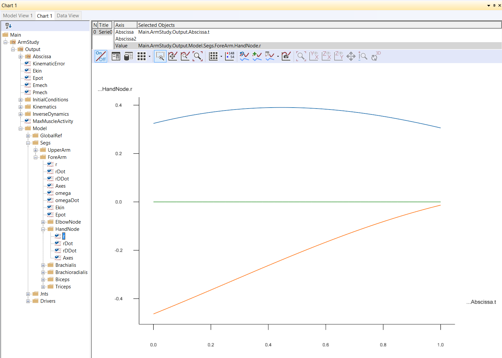

Lesson 4: Imparting movement with Drivers¶
Note
Here’s an AnyScript file to start on if you have not completed the
previous lesson: *demo.lesson4.any*.

If you have completed the three previous lessons, you should have a model with an upper arm grounded at the shoulder joint and connected to a forearm by the elbow. What we want to do now is to make the arm move.
How can an arm with no muscles move? Well, in reality, it cannot, but in what we are about to do here, the movement comes first, and the muscle forces afterward. This technique is known as inverse dynamics. We shall get to the muscles in the next lesson and stick to the movement in this one.
What are drivers?¶
Our mechanism has two degrees of freedom because it can rotate at the shoulder and at the elbow. This means that we have to specify two drivers. The natural way is to drive the shoulder and elbow rotations directly, and this is in fact what we shall do. But we could also choose any other two measures as long as they uniquely determine the position of all the segments in the mechanism. If you were building this model for some ergonomic investigation, you might want to drive the end point of the forearm where the wrist should be located in x and y coordinates to simulate the operation of some handles or controls. And this would be just as valid a model because the end point position uniquely determines the elbow and shoulder rotations.
Creating an AnyKinEqSimple driver¶
For now, let’s make a new folder and define two drivers:
}; // Jnts folder
AnyFolder Drivers = {
//---------------------------------
AnyKinEqSimpleDriver ShoulderMotion = {
AnyRevoluteJoint &Jnt = ..Jnts.Shoulder;
DriverPos = {-100*pi/180};
DriverVel = {30*pi/180};
}; // Shoulder driver
//---------------------------------
AnyKinEqSimpleDriver ElbowMotion = {
AnyRevoluteJoint &Jnt = ..Jnts.Elbow;
DriverPos = {90*pi/180};
DriverVel = {45*pi/180};
}; // Elbow driver
}; // Driver folder
This is much like what we have seen before. The folder contains two objects: ShoulderMotion and ElbowMotion. Each of these is of class AnyKinEqSimpleDriver. A driver is really nothing but a mathematical function of time. The AnyKinEqSimpleDriver is particularly simple in that starts at some position at time = 0 and increases or decreases at a constant velocity from there. These two drivers are attached to joints, and therefore they drive joint rotations. But the same driver class could also be used to drive translations, for instance the cartesian position of a point.
The lines
AnyRevoluteJoint &Jnt = ..Jnts.Shoulder;
and
AnyRevoluteJoint &Jnt = ..Jnts.Elbow;
are the ones that affiliate the two drivers with the shoulder and elbow joints respectively. They are constructed the same way as the joint definition in *Lesson 3* in the sense that a local variable, Jnt, is declared and can be used instead of the longer global name if we need to reference the joint somewhere else inside the driver. Notice also the use of the reference operator ‘&’ that causes the local variable to be a pointer to the global one rather than a copy. It means that if some property of the globally defined joint changes, then the local version changes with it.
The specifications of DriverPos and DriverVel are the starting value of the driver and the constant velocity, respectively.
Note
Since these drivers drive angles, the units are radians and radians/sec.
Try loading the model again by hitting F7. If you did not mistype anything, you should get the message “Loaded successfully” and no warning messages about lacking kinematic constraints this time.
Running simulations - making things move!¶
This is good news because you are now actually ready to see the model move. If you look closer at the model tree window, it has a second tab labelled “Operations”. This is the place where the AnyBody system places your studies, and from this window, you can execute them, i.e., start analyses and calculations.

Try expanding the ArmStudy root. You will get a list of the study types that the system can perform. “Study” is a common name for operations you can perform on a model. Try clicking the KinematicAnalysis study. With the buttons in the Operations window, you can now execute various types of analysis.
The Execute toolbar above the operations tree contains three buttons
 :
:
- Run operation: Starts or pauses the chosen operation. Shortcut F5.
- Step operation: Advances to next step of operation, typically a time step. Shortcut F6.
- Stop operation: Sets the operation back to its initial position. You must reset before you start a new analysis that was previously aborted. Shortcut F4
Replaying a simulation¶
All these functions are also available from the main frame toolbar
 and the menu Operation.
and the menu Operation.
Now, try your luck with the KinematicAnalysis study and the Run button. What should happen is that the model starts to move as the system runs through 101 timesteps of the study.
When the analysis in finished, you can use the replay panel to replay the model as you do in a movie player.
{kind=link}
Since we have no muscles so far, kinematic analysis is really all that makes sense. A kinematic analysis is pure motion. The model moves, and you can subsequently investigate positions, velocities, and accelerations. But no force, power, energy or other such things are computed. These properties are calculated by the InverseDynamicAnalysis.
Fetching simulation results¶
The analysis has 101 time steps corresponding to a division of the total analysis time into 100 equal pieces. The total time span simulated in the analysis is 1 sec. These are default values because we did not specify them when we defined the ArmModelStudy in the AnyScript model. If you want more or fewer time steps or a longer or shorter analysis interval, all you have to do is to set the corresponding property in the ArmModelStudy definition. When you click “Run”, all the time steps are executed in sequence, and the mechanism animates in the graphics window.
So far, the model was merely a two-bar mechanism moving at constant joint angular velocities. However, the system has actually computed information that might be interesting to investigate. All the analysis results are available in the ArmModelStudy branch of the tree view.
Directly under the ArmModelStudy branch, you find the Output branch where all computed results are stored. Notice that the Output branch contains the same folders we defined in the AnyScript model: GlobalRef, Segs, and so on. In the Segs folder you find ForeArm, and in that a branch for each of the nodes we defined on the arm. Try expanding the branch for the HandNode. It contains the field ‘r’ which is the position vector of the node. We might want to know the precise position of the HandNode at each time in the analysis, for instance, if we were doing an ergonomic study and wanted to know if the hand had collided with anything on its way.
If you double-click the ‘r’ node, the instantaneous position vector (depending on where your replay slider is) of the hand node for each time step is dumped in the message window at the bottom of the screen.
Plotting simulation results¶
However, we often prefer to plot our results. With the default layout, this feature is located in the same window as Model View under the tab called “Chart 1”. You can also open it from the pull-down menus by choosing View -> Charts -> …
This gives you a new window structured just like the editor window with a tree view to the left, but with an empty field for graphing results.
The tree in this window is much like the tree in the editor window except that some of the data has been filtered out so that you mainly see the parts of the tree that are relevant in terms of results or output. You can expand the tree in the chart window through ArmStudy and Output until you come to the HandNode. When you pick the property ‘r’, you get three curves corresponding to the movement of the three Cartesian coordinates of this node during the simulated time period. Try holding the mouse pointer over one of the curves for a moment. A small label with the global name of the data of the curve appears. All data computed in AnyBody can be visualized this way.

So far, we have only the kinematic data to look at. Before we can start the real biomechanics, we must add some muscles to the model.
See also
Next lesson: This is the subject of *Lesson 5: Definition of muscles and external forces*.